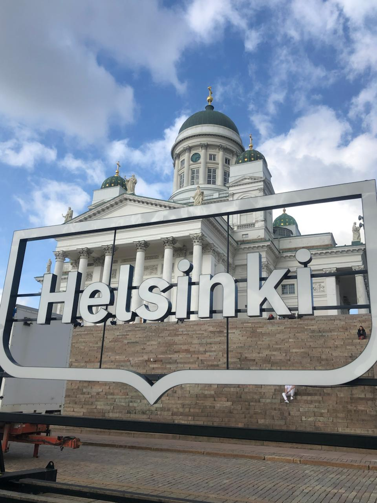
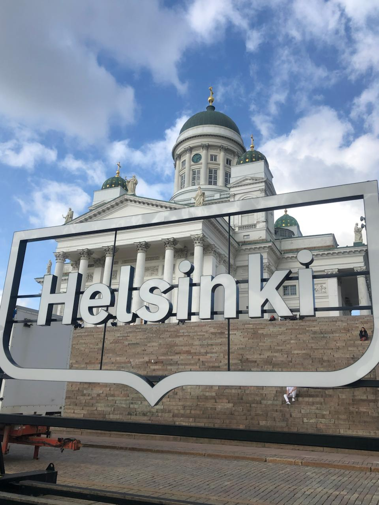

Current Position
Nadi Kyaw
M.Sc. Business Intelligence and Process Management
Berlin School of Economics and Law
Born and Raised
Yangon, Myanmar
:max_bytes(150000):strip_icc():format(webp)/view-of-shwedagon-pagoda-in-yangon--myanmar-3fa39fd4fd124c8787b365d33b917bf8.jpg)

What I Like
Drawing


Taking Random Photos


Traveling
 


What I Like
Drawing
Taking Random Photos
Traveling
Academic Journey
🎓 Stops Along the Way
| Period | Location | Role | School |
|---|---|---|---|
| 2007–18 | Yangon, Myanmar | High School | Basic Education High School Dagon(1) |
| 2022–25 | Potsdam, Germany | B.Sc. Digital Business and Data Science | University of Europe for Applied Sciences |
| 2025–Now | Berlin, Germany | M.Sc. Business Intelligence and Process Management | Hochschule für Wirtschaft und Recht Berlin |